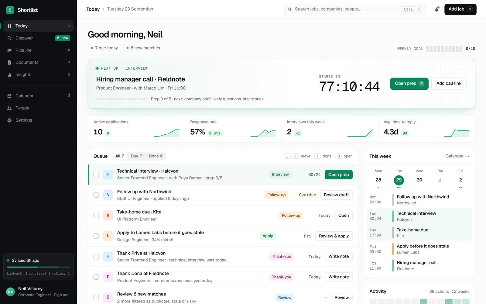
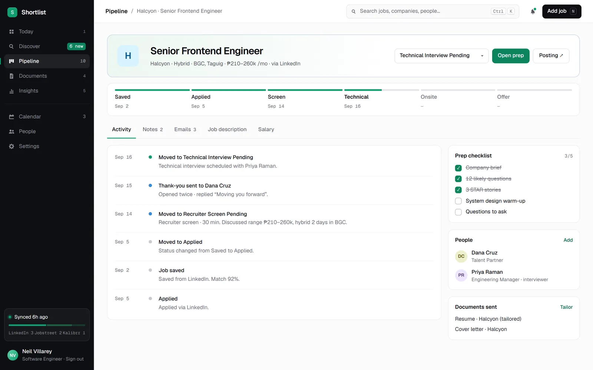
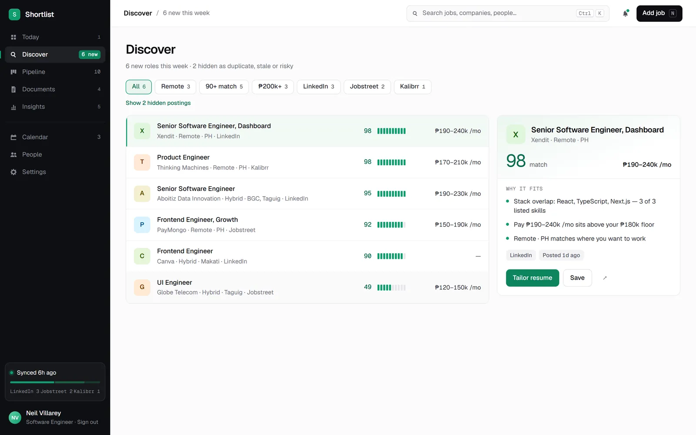
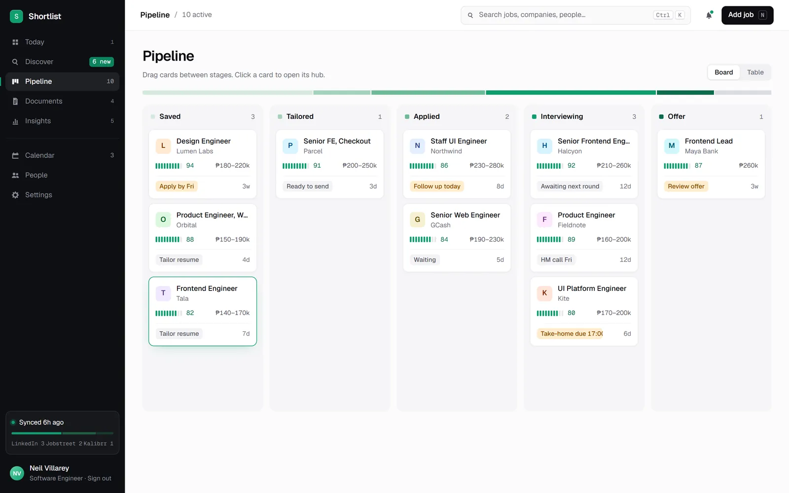
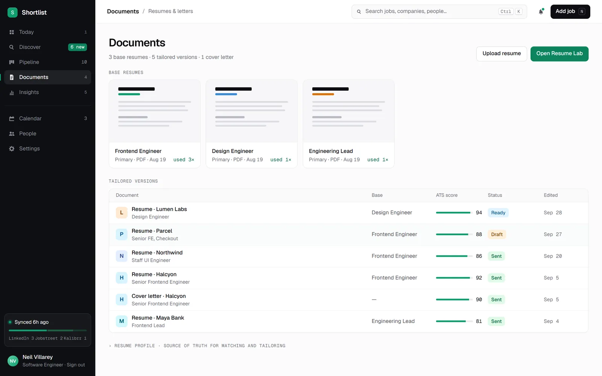
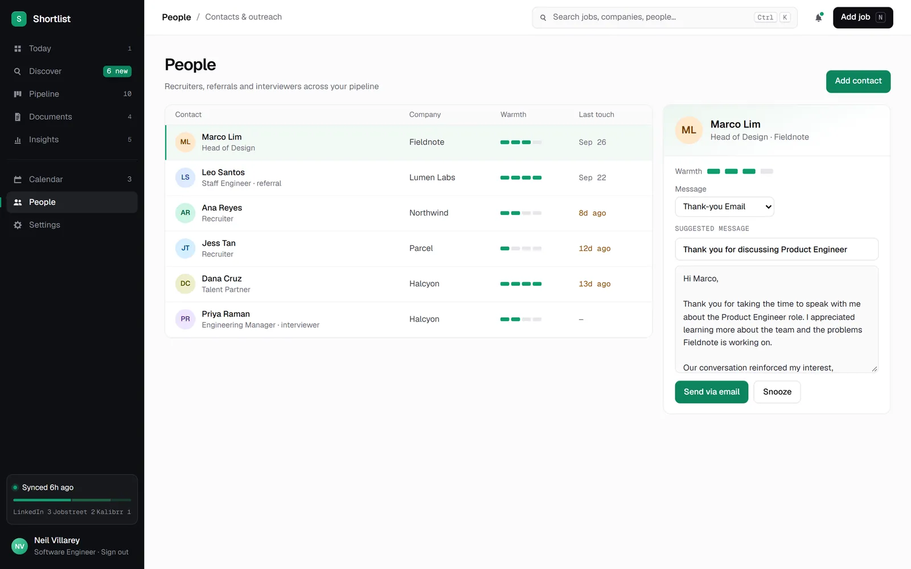
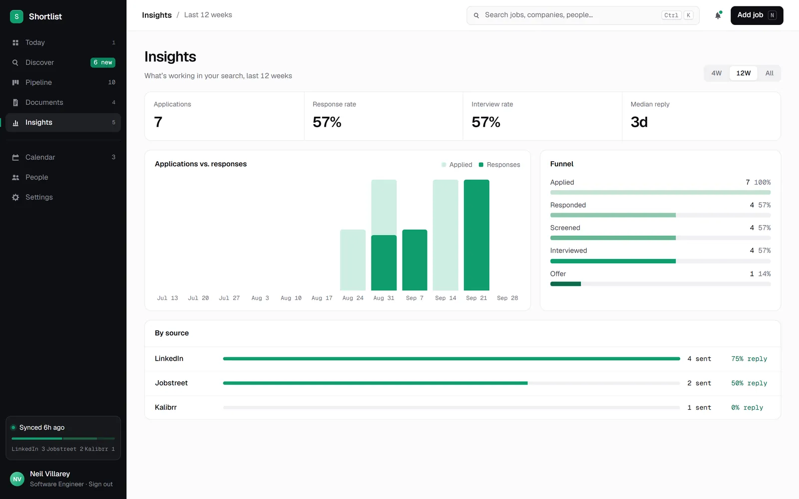
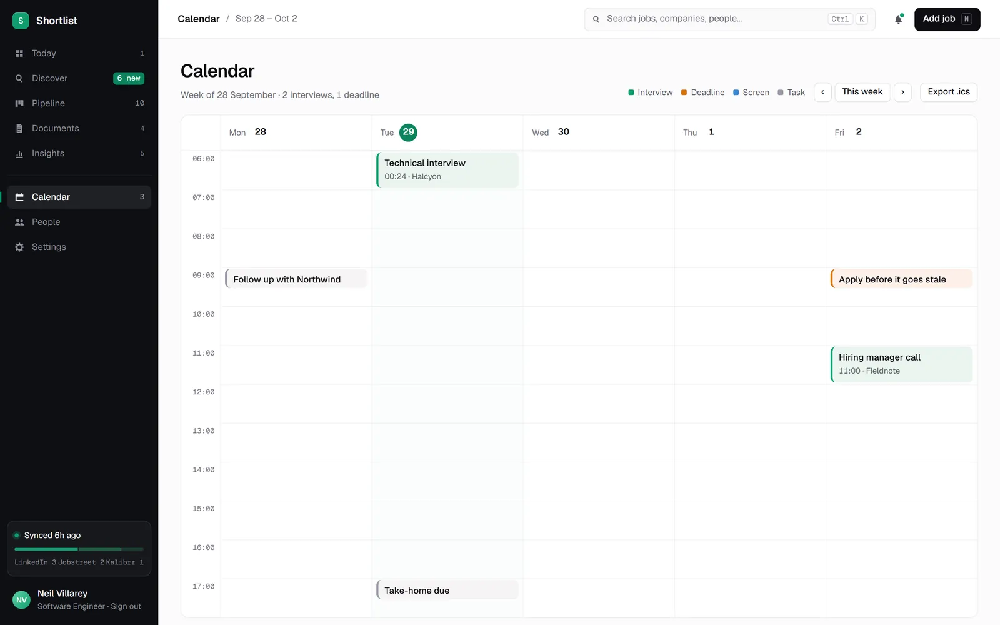

Web app · AI · 2026
Shortlist
A job search workspace that does the tedious parts for you. It pulls new roles from job boards, scores each one against your resume, hides the duplicates and the risky ones, and turns every application into a hub with its people, prep and follow-ups.


~ $ cat why.md
Job hunting is a full time job. It shouldn't feel like one.
A real job search spreads across five job boards, a spreadsheet, a folder of resume versions, a calendar and a pile of half written thank-you emails. The good roles get buried under reposts and scams.
Shortlist brings that into one place and adds judgment: it ranks what's worth applying to, explains why, and tells you what to do today so nothing goes stale.
~ $ ls ./features
01
Today tells you what to do
The day opens with the next interview and a countdown, then a queue of what's due: prep, follow-ups, thank-you notes and applications about to go stale, each with a one click action.
- Active applications, response rate and time to reply at a glance
- This week's schedule beside the queue
02
Matches ranked, and explained
New roles are pulled from job boards like LinkedIn, Jobstreet and Kalibrr, enriched with AI and scored against your resume. Each match says why it fits, from skill overlap to pay and location, and duplicates, stale posts and risky listings are filtered out.
- Filters for remote, 90+ matches, salary and source
- Tailor a resume or save a role straight from the match

03
Every application is a hub
The pipeline board moves roles from saved to offer by drag and drop. Opening one shows its stage timeline, activity, notes, emails, the job description and salary, alongside a prep checklist, the people involved and the documents you sent.

04
Tailored documents with an ATS score
Keep a few base resumes, then tailor a version for each role. Every version gets an ATS match score and suggested edits that reorder real skills and experience toward the job, without inventing anything.
- Tailored resumes and cover letters tracked per application
- Suggested outreach messages for recruiters and interviewers


05
Know what's working
Insights charts applications against responses week by week, shows the funnel from applied to offer, and compares response rates by source. The calendar lays out interviews, deadlines and tasks, and exports to any calendar app.


~ $ cat stack.txt
Under the hood
Next.js + TypeScript
App Router with server actions and route handlers, organised by feature.
DeepSeek
Enriches job posts and drafts outreach, while matching and risk checks run as plain, testable rules.
Job board sync
Collects roles from job boards and your own links, then dedupes and scores them.
Local first
Runs on your machine in local mode, so your resume and search data stay with you.